Grid and Panel layout
The primary containers used to lay out widgets are grids and panels. Both place a linear list of widgets into a two dimensional grid from top-left to bottom-right and both support widgets that span multiple rows or multiple columns. The main difference between grids and panels is that grids reflow widgets as the browser screen width changes while panels maintain a fixed layout of widgets.
Tl;dr;
Grids
- Have a variable number of columns to fill the page, column width is 120px min.
- Column count can be limited using min-cols and max-cols.
- The number of columns is at least the number of columns of the widest widget.
- Rows are fixed-height 78px.
- Widgets are placed into columns left to right and then flow to the next row if they don't fit.
- Widgets can "float up" if there is a gap in the grid, so small widgets late in the layout can move earlier to fill gaps.
- If the grid reaches max-cols and doesn't fill the width of the window then it is magnified by up to 1.33x. If it still doesn't fill the window it is left-aligned.
- If the grid is at min-cols (or the width of the widest widget) and the window is narrower then the grid is scaled down to up to 0.8x. If it still doesn't fit, some widgets go off-screen.
Panels
- Have a variable number of rows and fixed number of columns.
- The columns are half the size of the grid's columns!
- The rows are variable height: they have the minimum height of the tallest widget in the row, and then any remaining space is distributed evenly across all rows.
Grids
Grids display a two-dimensional grid of widgets where all columns have the same width and all rows have the same height. The column width is a minimum of 120px and there is an 8px gap between columns. The column width stretches so an integral number fills the width of the browser window, this means that the maximum theoretical column width is 247px (a very narrow window showing a single column before the jump the two columns). The height of the grid rows is fixed at 78px (a 3/2 width/height aspect ratio) with an 8px gap.
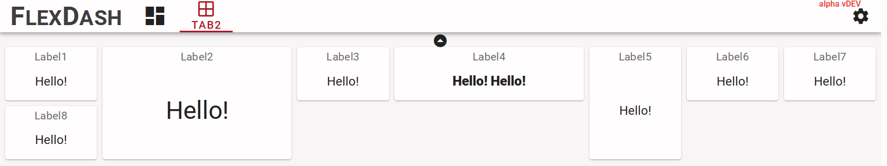
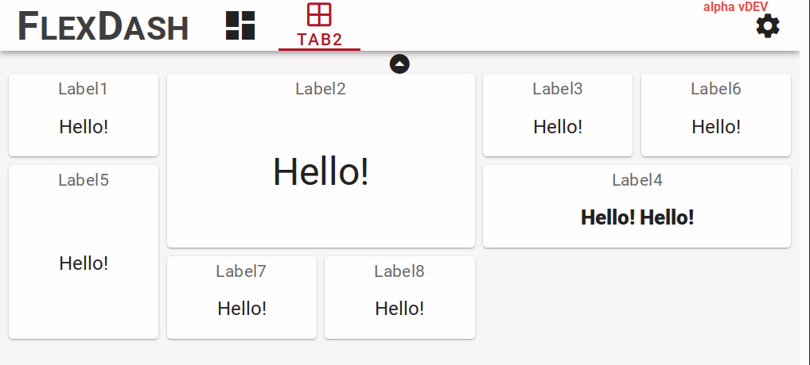
The reflowing of the grid can be constrained by specifying a minimum number of columns as well as a maximum. The max constraint can avoid awkward wide layouts on very wide displays and the min constraint can be helpful for mobile device layout to avoid excessively narrow layouts, possibly forcing the user to either pan or hold the device in landscape orientation.
Finally, as if all this weren't complicated enough, if max-cols or min-cols is set the grid automatically scales its content to macth the width of the window. This is currently limited to a range of 0.75x to 1.33x. Here are some examples that hopefully illustrate the workings.
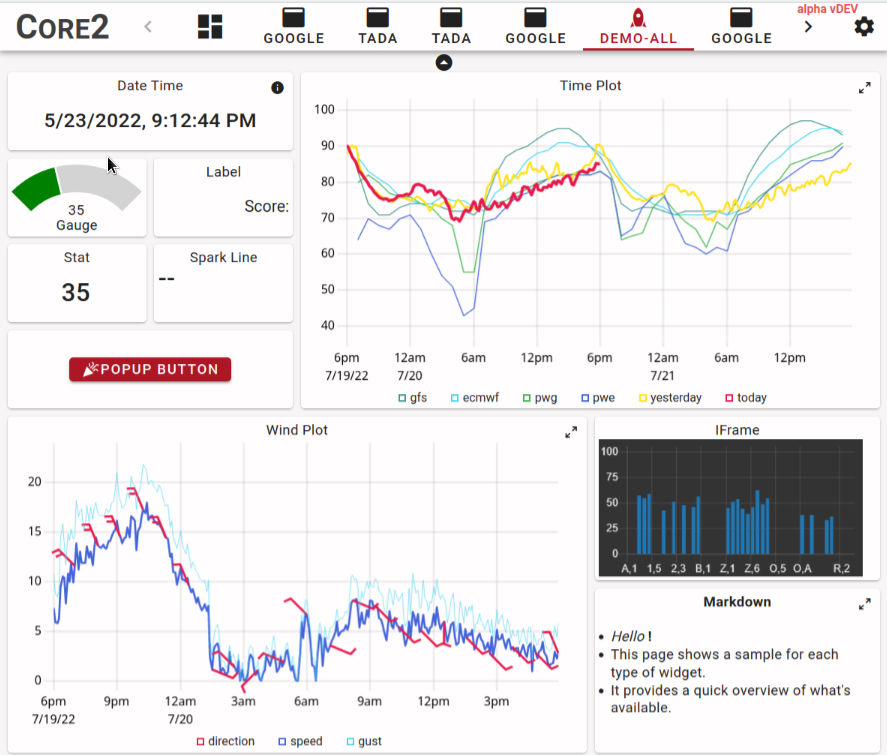
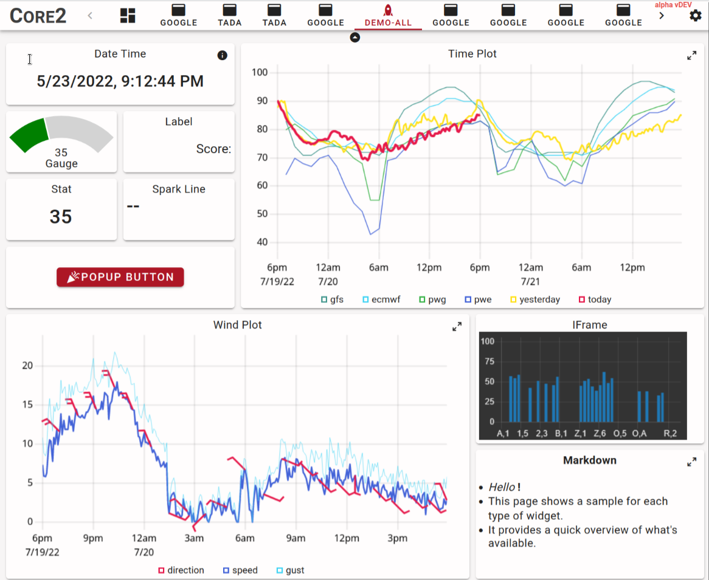
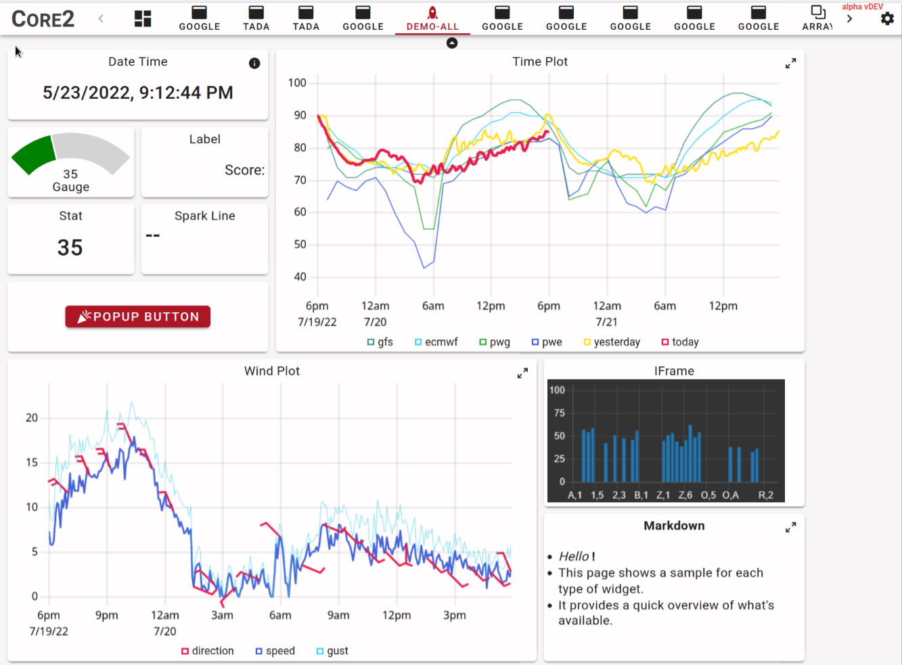
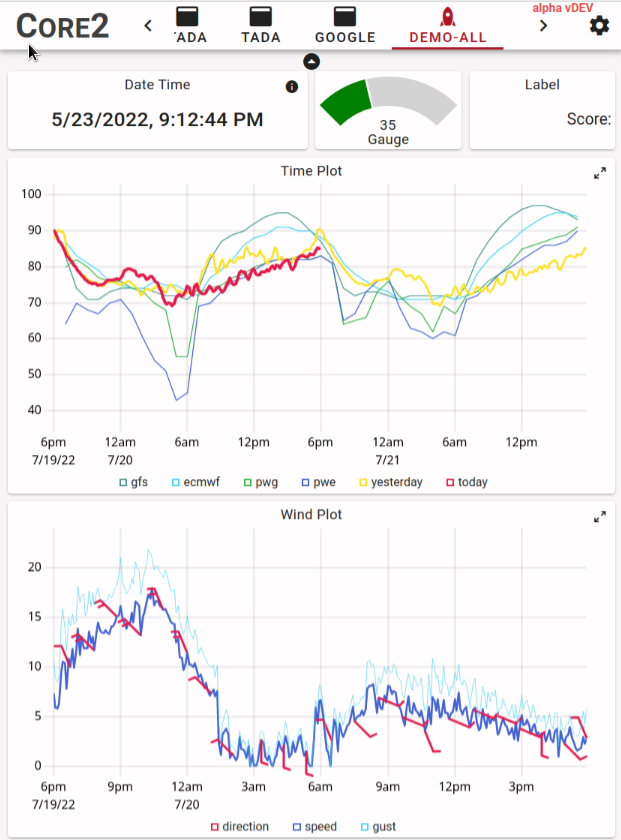
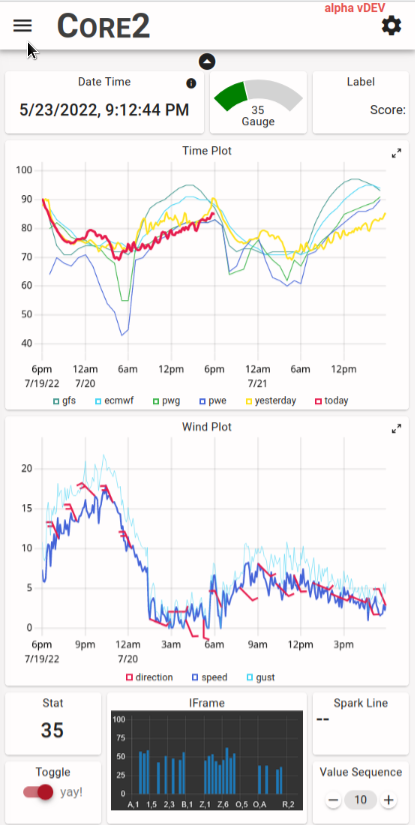
In these examples the grid was set explicitly to min-cols:4 but strictly speaking that was not
necessary because the width of the grid is constrained so it always has at least as many columns
as the widest widget, which are the 4-column graphs in this example.
The non-intuitive part here is that it's not just the wide widget that may exceed the
width of the screen but the grid as a whole and thus other small widgets may be off-screen too
if the 0.75x shrink is insufficient.
Panels
Panels also display a two dimensional grid but the number of columns is fixed and are of half the size of grid columns. Panels are placed into a grid just like widgets (from the grid's point of view a panel is a widget) thus they span a fixed number of grid columns and rows. A panel then has twice the number of columns for its internal grid and an arbitrary number of rows. The columns are generally equal-width (CSS has its quirks...) and the rows are minimal-height with extra space equally distributed.
The background of a panel can be either solid or transparent. A transparent background gives the look of a number of widgets that are grouped together while a solid background eliminates boundaries between widgets and makes the panel look like a larger compound widget.
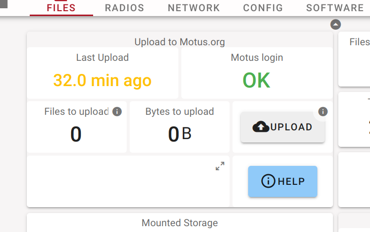
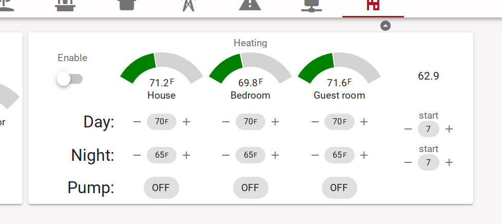
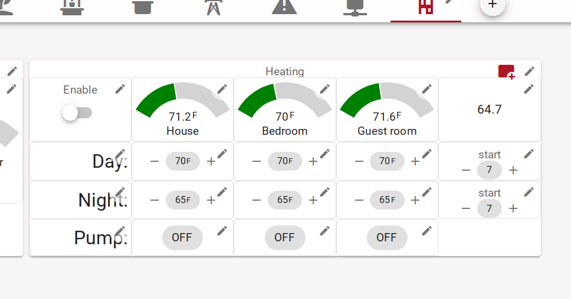
Pop-up grids
Warning
Pop-up grids are very experimental, their behavior may change.
A pop-up grid is a grid that is shown as a modal overlay over the page with the background greyed out. It is opened (popped-up) via a message from Node-RED and it can be closed either using an close button ("X") in the top-right or using another message. To be more precise, the modal overlay covers the entire context of the tab leaving the tab bar functional so the user can move to another tab and come back.
The width of the pop-up can fill the width of the page, up to the max-cols setting. It is generally necessary to reduce max-cols to avoid awkward blank space at the right of the pop-up. The height of the pop-up is governed by its contents. The layout within the grid functions the same way as for normal grids, in fact, the content of the pop-up is a standard grid component.
To control the grid a "FlexDash ctrl" node is required in Node-RED and it must be associated with
the pop-up grid.
The grid can be shown or hidden by sending the ctrl node a message with msg.show = true/false.
When the grid is close via the close button its corresponding ctrl widget emits a message with
msg.payload = { show: false }.
Tips and tricks
Creating compound widgets
An example of a compound widget is shown ine the figure above. Some of the tricks used are:
- label widgets are useful to place text because they provide control over font size and text alignment, e.g. the "Day:", "Night:" labels
- stat widgets without title are useful to display set points and other control values
- use buttons with icons to implement actions
Creating mobile layouts
Narrow cell phone screens are approx 3 grid columns wide, setting min-cols on a grid to 3 forces this even on phones that show a smidge under 3 columns and enables the scaling to "micro-adjust" the difference.
Grouping widgets into panels that are 3 cols wide creates a type of card layout that works well both on narrow phone screens as well as "normal" desktop screens, setting max-cols to 6 or 9 avoids awkward super-wide layouts.
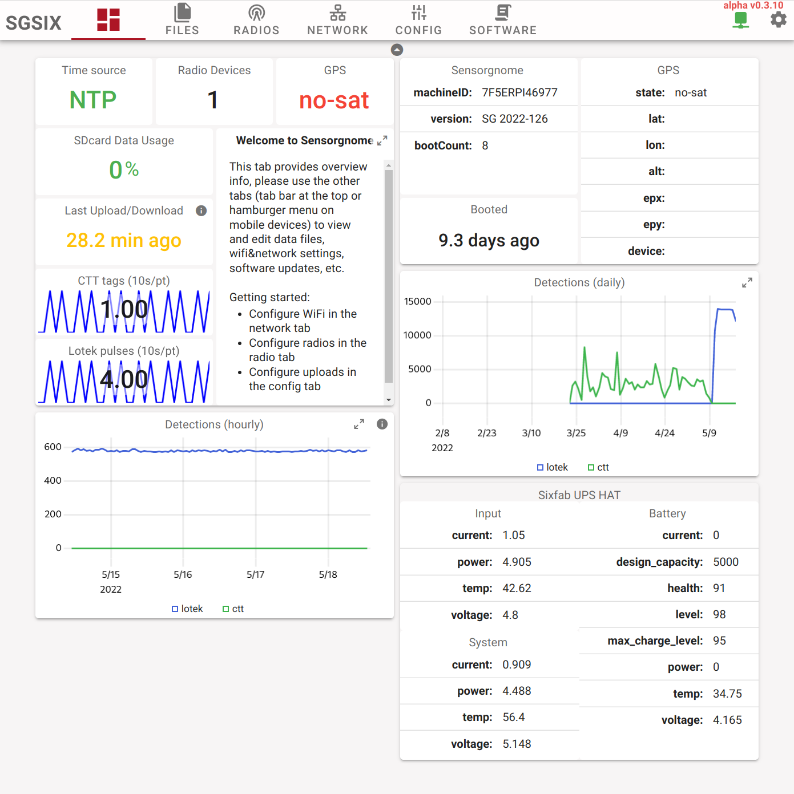
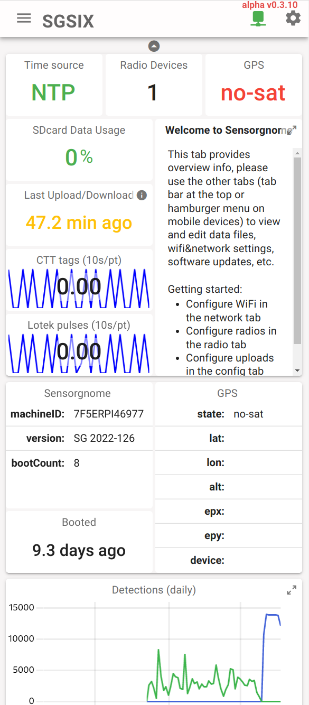
Many widgets can be maximized, thus a graph can be presented in a relatively small widget and the user can maximize it to view the details, the same applies to the markdown widget and others.
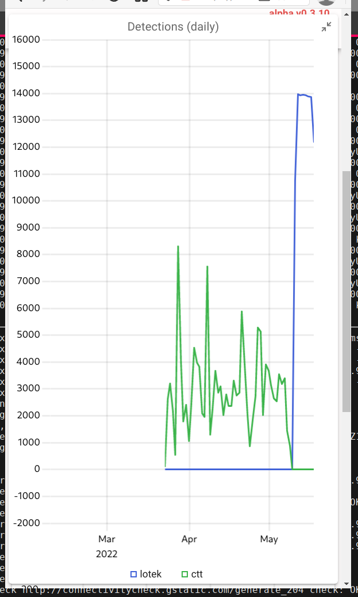